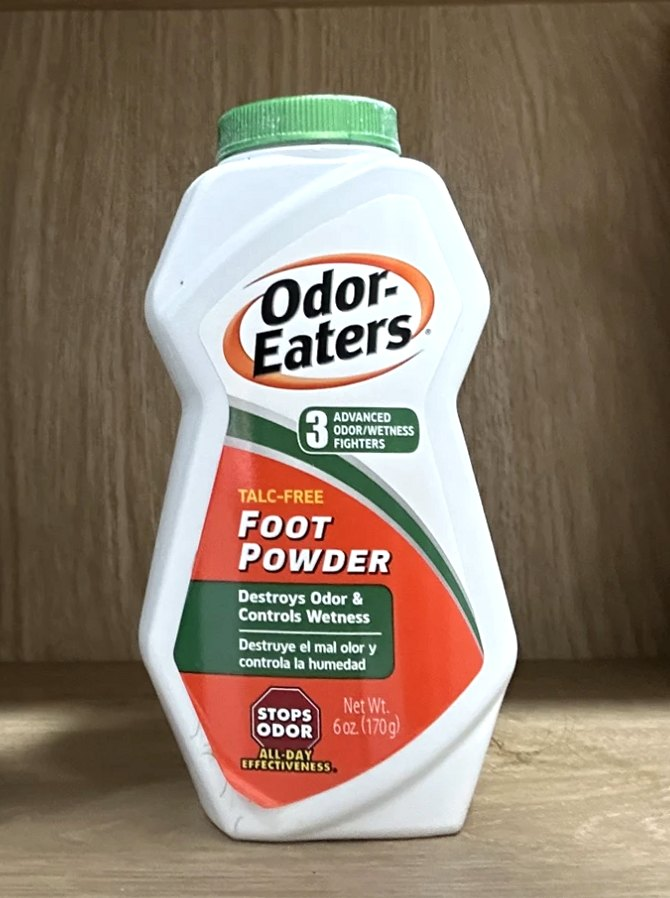

3년째 신발장에 두는
발냄새템
땀 많은 발로 3년 넘게 써 본 오더이터 풋 파우더 솔직 후기
이 글의 쿠팡 링크로 구매하면 쿠팡 파트너스 활동에 따라 일정액의 수수료를 받아요.

처음 산 이유
발에 땀이 많은 편이에요. 씻고 나와도 냄새가 발에 밴 느낌이 남아서 처음 샀어요.
3년째 계속 쓰는 이유
제 경우엔 냄새가 확 잡히고, 발이 뽀송하게 유지됐어요. 땀 때문에 냄새가 나는 저한테는 이게 제일 잘 맞았어요.
아쉬운 점
제 경우엔 냄새가 잘 잡혔는데, 뿌릴 때 가루가 흩날려요.